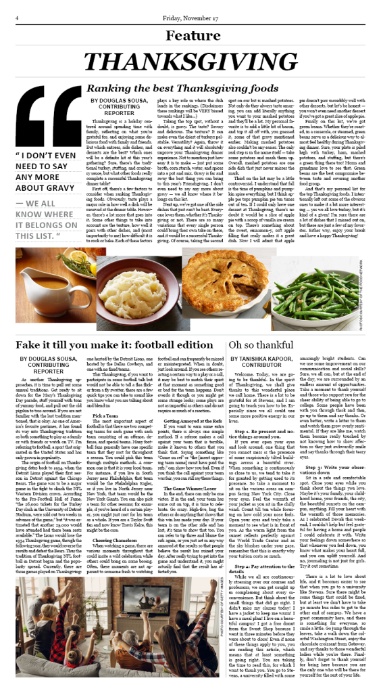
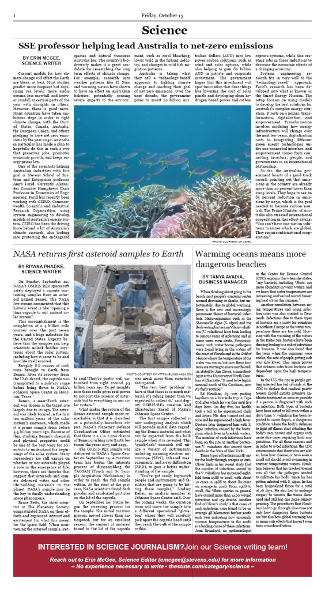
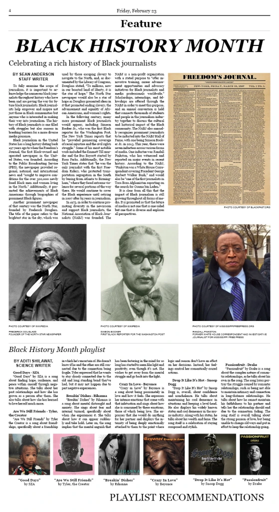
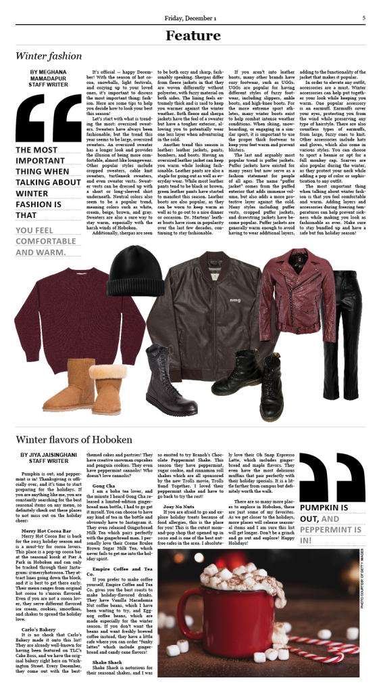
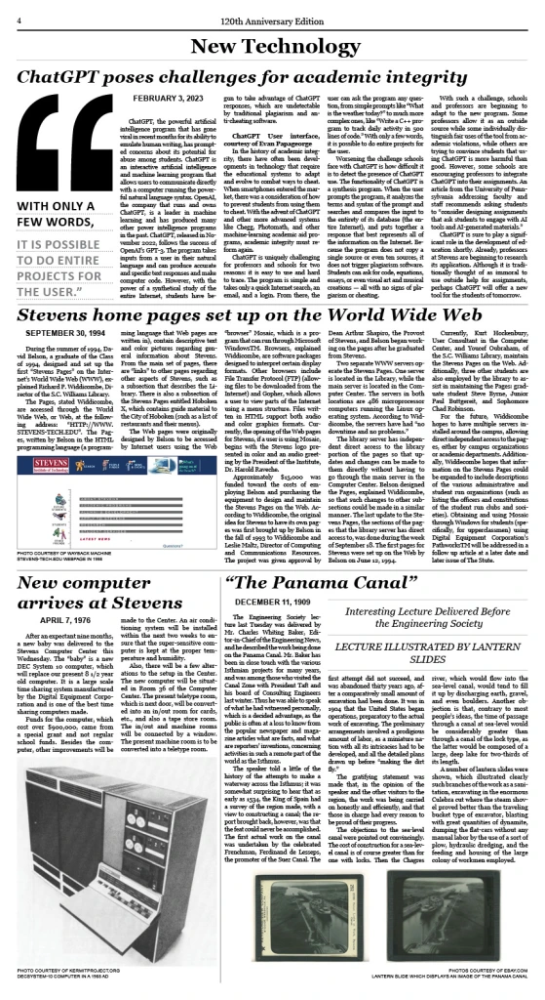
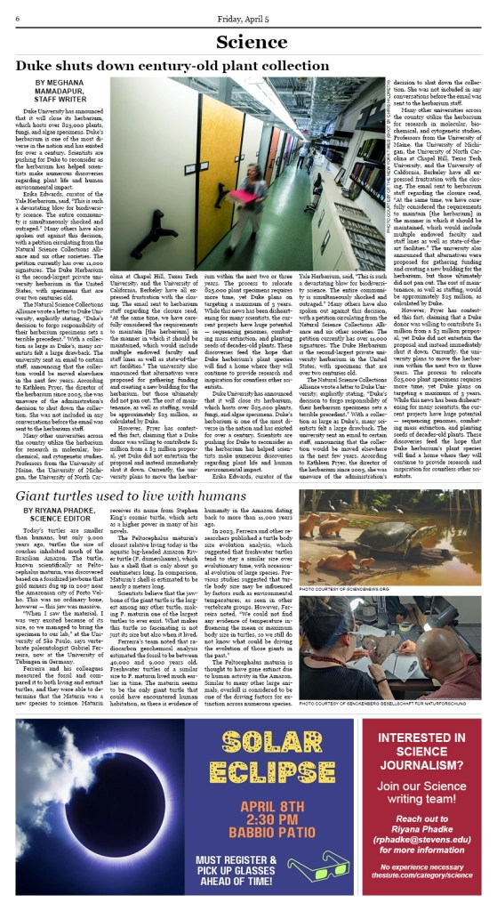

The Stute (Newspaper)
As a Layout Assistant for The Stute (Stevens Institute of Technology’s student newspaper) from October 2023-May 2024, I designed and formatted one or more newspaper sections each week in Adobe InDesign. In addition to layout design, this position required skills such as image curation, photography, and collaboration with my editor.
Layout Archive





